Матеріали Dentsply Sirona · журнал «ДентАрт» 2023 №3
Реставрація дефектів Класу II: важливість, методи та етапи
Class II Restorations: The Importance of Successful Restorations, Methods and Stages
Важливість процедури реставрації дефектів Класу II для клініки
Прямі адгезивні реставрації становлять приблизно 1/3 річного доходу стоматолога, отриманого від реставраційних робіт. Приблизно 69 % щорічних стоматологічних пацієнтів потребують реставрацій у прямій техніці, і майже половина з них є Класом II. Коли процедура відновлення дефектів Класу II становить таку значну частину вашого бізнесу, а такі клінічні випадки є у третини ваших пацієнтів — настав час переосмислити, що це означає для вашої практики.
Реставрації Класу II відіграють важливу роль у розвитку та процвітанні клініки. Сама процедура відновлення дефектів Класу ІІ впливає на досвід пацієнтів, їх утримання або ж перенаправлення. Уживання заходів, щоб зробити процедуру реставрації ефективнішою, а результат більш передбачуваним, значною мірою позитивно вплине на вашу стоматологічну діяльність. Через попит пацієнтів на покращення естетики та через проблеми зі здоров'ям, пов'язані з використанням ртуті, застосування композитних матеріалів набуває популярності, а кількість процедур заміни амальгами на композит зростає.
Найновіший звіт ADA (2006) засвідчив, що 70 % прямих реставрацій були виконані із використанням фотополімерних реставраційних матеріалів. Проте композитні реставрації служать у середньому лише 5-7 років. Нещодавній звіт показав, що ймовірність заміни реставрації Класу ІІ із фотополімерного матеріалу в 10 разів більш вірогідна за рахунок клініциста, ніж реставрації Класу ІІ з амальгами. Враховуючи ці тенденції, потреба забезпечення позитивних результатів композитної реставрації є більш важливою, ніж будь-коли. Оскільки ми прагнемо постійно вдосконалюватись у методах реставрації, розгляньмо кілька аспектів, якими може вимірюватися успіх композитної реставрації. Який вигляд має реставрація? Якою реставрація є у використанні? Як довго вона служить?
Дослідження свідчать про те, що причина № 1 невдач роботи з композитом — рецидивуючий карієс, а найбільш вразливою ділянкою порожнини Класу II є дно проксимальної порожнини. Неякісне виконання цього з'єднання може призвести до передчасної несправності реставрації, що вплине на кінцевий результат вашої роботи. Середня вартість відновлення невдалої реставрації Класу II становить 292 долари США, включаючи час роботи лікаря та матеріали. Крім того, зовнішній вигляд, відчуття та довговічність завершеної реставрації впливають на досвід пацієнта. Багато поширених несправностей на дні проксимальної порожнини Класу II є основною причиною чутливості, а відповідність відтінків і шорсткість поверхні впливають на зовнішній вигляд і відчуття — це все ключові показники для пацієнта, щоб оцінити, чи була реставрація успішною.
У дослідженні ADA причин, чому люди не ходять до стоматолога, 26 % звинуватили попередній поганий досвід, через це вони менш схильні рекомендувати лікаря своїм друзям та родичам. З огляду на те, що 50 % первинних консультацій припадає на прихід пацієнта за рекомендацією, а в середньому дохід у практиці від одного пацієнта на рік становить 1000 доларів США, досвід пацієнтів безпосередньо впливає на здатність клініки підтримувати міцну базу пацієнтів і потік доходів. За допомогою однієї процедури ви можете створити позитивний досвід для третини вашої щорічної бази пацієнтів.
Успішне відновлення дефектів Класу II — це більше, ніж досягнення клінічних результатів, які задовольняють пацієнта та його потреби у здоров'ї ротової порожнини. Існують також наслідки для бізнесу, які підкреслюють цінність досягнення ідеального результату відновлення дефектів Класу II. Щоб досягти середнього щоденного доходу лікаря-стоматолога, він чи вона повинні заробляти приблизно 450 доларів США на годину. Це може бути важко зробити, враховуючи сьогоднішні робочі накладні витрати в загальній практиці, коли процедура Класу II зазвичай приносить менше 200 доларів США доходу та займає 30-40 хвилин. Тому технологічний прогрес, який робить процедуру реставрації бокових зубів швидшою, легшою та вигіднішою, не вдаючись до компромісних скорочень, вимагає серйозної уваги.
Правильне виконання кожного етапу процедури реставрації дефекту Класу II має важливе значення для успіху. Усуваючи найвразливіші ділянки при відновленні дефектів Класу II та досягаючи високих естетичних результатів, ви можете бути впевненими, що результат позитивно вплине як на досвід ваших пацієнтів, так і на процвітання вашого бізнесу.
Захист найбільш вразливої поверхні дефекту Класу II
Причина № 1 невдач роботи з композитом — рецидивуючий карієс, а найбільш вразливою поверхнею порожнини Класу II є дно проксимальної порожнини. Неправильне виконання етапів роботи може скомпрометувати успіх реставрації. Захист дна проксимальної порожнини передбачає якісну ізоляцію відновлюваного поля, створення контакту, міцного з'єднання, збереження маргінальної цілісності та відновлення до клінічно важливих зон.
Ізоляція і створення контакту
Успіх реставрації Класу II може бути скомпрометований, перш ніж ви торкнетеся адгезиву чи композитних матеріалів. Так само, як і спорудження будинку, ви повинні почати роботу з міцного фундаменту, інакше те, що ви збудуєте на ньому, не витримає. Під час препарування проксимальної порожнини оператор намагається уникнути контакту бора і сусіднього зуба, тому етап препарування може потребувати досить багато часу та є втомливим і трудомістким. Забезпечити й підтримувати ізоляцію реставраційного поля може бути складно, і створити ідеальний міжпроксимальний контакт часто не вдається.
Препарування. Дослідження засвідчили, що в 70 або більше відсотках випадків під час реставрації Класу II клініцист зачіпає сусідній зуб бором під час препарування — це яскравий приклад ятрогенного пошкодження. Коли бор прорізає сусідній зуб, поверхня зуба стає шорсткою і створює місце для легшого прикріплення бактерій і утворення карієсу. Щоб уникнути надрізу сусіднього зуба, клініцисти, як правило, витрачають більше часу на повільне та ретельне препарування. Щоб уникнути затрат додаткового часу та знизити ризик ятрогенного пошкодження, рекомендується використовувати інтерпроксимальний захист для сусіднього зуба. Це дозволить препарувати швидше, без хвилювання, і водночас робити це правильно.
Ізоляція. При використанні фотополімерних реставраційних матеріалів ізоляція має вирішальне значення для успіху. Якщо реставраційне поле контаміноване вологою, фізичні властивості та остаточний успіх реставрації можуть бути скомпрометовані. На здатність забезпечити ізоляцію та підтримувати її впливає низка факторів, зокрема гігієна ротової порожнини пацієнта, розташування реставрації, подразнення тканин навколо реставраційного поля та щільне прилягання матричної системи. Хоча ви не можете контролювати той факт, що пацієнт не користується зубною ниткою або що ізоляція складніша на ділянці бокових зубів, де виконується 74 % прямих реставрацій, ви можете певною мірою контролювати, наскільки ви пошкоджуєте оточуючі тканини під час процедури та наскільки добре ви герметизуєте реставраційне поле від вологи.
В університетах вас, можливо, навчали використовувати матричну систему Tofflemire з дерев'яним клином для реставрацій Класу II. На жаль, оскільки матриця Tofflemire зачіпає тканини навколо зуба, а дерев'яний клин вводиться в міжзубний простір, щоб створити розведення між зубами, навколо зуба, який потрібно відновити, ймовірно, виникне кровотеча. У секційних матричних системах стрічка матриці зачіпає лише певну ділянку тканини, що оточує зуб. Крім того, кільце розводить зуби, щоб звільнити місце для матричної стрічки, тож це вже не є «завданням» для клина (пасивне розклинювання), саме це передбачає такий дизайн клина, який є менш травматичним до тканин і знижує ризик кровотечі.
Створення контакту. Відновлення належного міжпроксимального контакту та контуру — це критичний фактор успіху реставрації Класу II. Однак згідно з нещодавнім опитуванням Dental Town, 70 % клініцистів вважають створення контакту найскладнішою частиною реставрації Класу II. Досягнення належного контакту та контуру означає, що відреставрований зуб щільно прилягає до сусіднього зуба в середній третині і має природний, опуклий контур. Відкритий або неправильно розміщений/сформований міжзубний контакт може призвести до відлому реставрації, а також до потрапляння їжі в міжзубний простір, що може спричинити запалення пародонта, втрату кісткової тканини та рецидив карієсу.
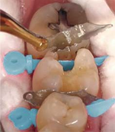
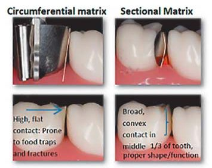
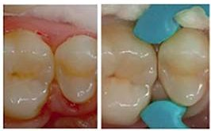
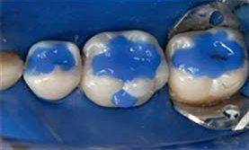
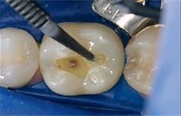
Створення міцного з'єднання
Препарування зуба завершено, реставраційне поле успішно ізольовано за допомогою матричної системи. Наступне завдання полягає в забезпеченні якісної адгезії. Найкращим і найміцнішим вважається з'єднання з протравленою емаллю, але якою ціною, оскільки протравлювання глибокого дентину може збільшити ймовірність післяопераційної чутливості! Чи можемо ми отримати міцний зв'язок з емаллю на межі поверхні порожнини без збільшення ймовірності чутливості внаслідок протравлювання на глибокому дентині? Який вибір кращий — самопротравлювання, щоб уникнути чутливості, чи тотальне протравлювання для кращого з'єднання з емаллю? Універсальні адгезиви забезпечують гнучкість у прийнятті рішень щодо вибору техніки для досягнення міцного з'єднання та мінімізації ймовірності післяопераційної чутливості.
Чому ми протравлюємо. Нанесення ортофосфорної кислоти на зуб після препарування видаляє змазаний шар (ошурки, що залишилися на поверхні після препарування зуба), відкриваючи канальці та оголюючи колагенові волокна для ефективного створення зони, куди може проникнути адгезив, закріпитися і утворити міцне з'єднання. Проблема протравлювання полягає в тому, що воно впливає на емаль і дентин з різною швидкістю. Тривалість впливу протравлювача на емаль зазвичай становить не менше 15 с, тоді як його вплив на дентин не має перевищувати 15 с. Ось у чому полягає перевага універсальних адгезивів — ви можете належним чином обробити як дентин, так і емаль, контролюючи час і зону протравлювання, маючи в арсеналі лише один адгезив. Площа емалі, яку потрібно протравлювати, — визначальний фактор у виборі відповідного способу протравлювання під час роботи з універсальним адгезивом.
Самопротравлювання. Традиційно техніка самопротравлювання доречна, коли препарування робиться в основному на дентині, з невеликими або зовсім відсутніми доступними краями емалі для протравлювання. Мета полягає в тому, щоб мінімізувати ймовірність післяопераційної чутливості. Як самопротравлювальні, так і універсальні адгезиви містять кислотні мономери, які забезпечують адекватну демінералізацію дентину для успішного з'єднання, тому окремий етап протравлювання ортофосфорною кислотою не потрібен. Використання універсального адгезиву в цій техніці може допомогти уникнути післяопераційної чутливості, усуваючи ймовірність надмірного протравлювання або пересушування дентину, оскільки змазаний шар не видаляється повністю. Натомість він додається до гібридного шару після затвердіння адгезиву.
Тотальне протравлювання. Доцільно використовувати техніку тотального протравлювання, якщо досить значний відсоток поверхні, до якої здійснюється адгезія, становить емаль. З'єднання з протравленою емаллю є найміцнішим з'єднанням, яке ми можемо створити в ротовій порожнині. У цій техніці протравлювач — ортофосфорну кислоту — наносимо на всю поверхню, потім ретельно змиваємо, а зуб висушуємо, залишаючи злегка вологий, блискучий шар дентину. Застосування універсального адгезиву в техніці тотального протравлювання часто потребує втирання/перемішування під час нанесення. Так зазвичай роблять при нанесенні самопротравлюючого адгезиву, але це є модифікацією техніки для користувачів традиційного адгезиву для тотального протравлювання.
Селективне протравлювання. Універсальні адгезиви були створені, щоб дати лікареві-стоматологу можливість отримати міцне з'єднання з емаллю, одночасно зменшуючи ймовірність післяопераційної чутливості, не наносячи ортофосфорну кислоту на дентин. Переваги селективного протравлювання усвідомлюються тоді, коли під час препарування оголюється дентин, але краї емалі також доступні. Якщо ви традиційно використовуєте техніку самопротравлювання, то нанесення ортофосфорної кислоти на краї емалі (уникаючи зони дентину) дає вам упевненість, що ви не підвищуєте ймовірність виникнення чутливості й отримаєте міцне з'єднання з дентином. Якщо ви традиційно користуєтеся технікою тотального протравлювання, ви можете бути впевнені, що не жертвуєте з'єднанням з емаллю, уникаючи надмірного протравлювання або пересушування дентину.
Під час селективного протравлювання найкращим варіантом є ортофосфорна кислота з високою в'язкістю. Така кислота дозволить провести протравлювання країв емалі, зводячи до мінімуму ймовірність того, що вона буде капати або стікати на небажані ділянки, такі як дентин. Також потрібно мати на увазі, що деяка продукція, призначена для техніки самопротравлювання, протипоказана через вплив ортофосфорної кислоти на дентин.
- Надмірне протравлювання дентину. Тривалість дії кислоти на дентин не повинна перевищувати 15 с. Занадто тривале протравлювання може мати наслідком демінералізацію дентину до більш глибокого рівня і труднощі в отриманні адекватного непошкодженого гібридного шару шляхом інфільтрації адгезиву, що може призвести до чутливості!
- Надмірне пересушування дентину. Препарування та висушування видаляє вологу, потрібну для належного підвішування делікатних колагенових волокон, і робить їх доступними для з'єднання з адгезивом. Зберігайте поверхню дентину злегка вологою перед нанесенням адгезиву.
- Не видалений розчинник під час етапу просушування. Можливо, ви усвідомлюєте, як діють розчинники (ацетон та спирт) на основі випаровування, але слід визнати, що для кожного з них потрібна різна кількість розрідженого повітря, щоб повністю видалити розчинник після нанесення. Це критично важливий крок у забезпеченні найвищого потенціалу матеріалу.
- Неповне перекриття поверхні матеріалом — важливо повністю і рівномірно покрити внутрішню поверхню відпрепарованої порожнини адгезивом. Ви можете переконатися в цьому, візуально оглянувши поверхню: після внесення адгезиву поверхня повинна мати вигляд глянцевої, а не матової.
- Під час полімеризації — у Класі ІІ адгезив часто міститься на відстані 8 мм або більше від кінчика полімеризаційної лампи. Щоб забезпечити належну полімеризацію адгезиву для міцного з'єднання на дні проксимальної порожнини (найбільш вразлива поверхня Класу II), слід обрати світло, яке добре працює на клінічно значущих відстанях.
Чому товщина адгезивної плівки має значення в порожнинах Класу II. Товсті шари адгезиву мають тенденцію накопичуватися в кутах проксимальної порожнини Класу ІІ. Ці скупчення адгезиву на рентгенограмі відображаються як напівпрозорі ділянки, котрі можна помилково діагностувати як порожнину, щілину або вторинний карієс, що викликає сумніви, чи варто переробляти реставрацію.
Обирайте адгезив, який забезпечує універсальність техніки нанесення залежно від клінічної ситуації, дозволяє вам використовувати техніку нанесення, яка найкраще підходить для основи, до якої ви здійснюєте адгезію. Універсальний адгезив Prime&Bond не тільки дає вам можливість самостійно вирішувати, яка техніка протравлювання є найбільш доцільною, він оптимізує інвентар. Одна пляшечка забезпечує гнучкість техніки і має малу товщину плівки для підвищеної точності. Запатентована технологія Active-Guard™ забезпечує надійне з'єднання навіть за різного рівня вологості.
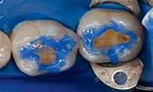
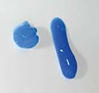
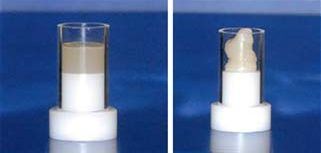
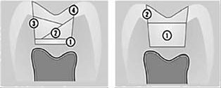
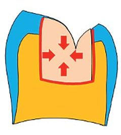
Досягнення та підтримання крайової цілісності
Зуб було відпрепаровано, ізольовано та нанесено адгезив, застосовуючи техніку протравлювання, що відповідає субстрату, до якого ми здійснюємо адгезію. Після світлового затвердіння адгезиву настав час вносити реставраційний матеріал. На цьому етапі ви маєте справу з двома ключовими завданнями: 1) адаптація матеріалу в порожнині; 2) покрокове (порційне) внесення матеріалу.
Адаптація матеріалу в порожнині. У випадку, якщо реставраційний матеріал не здатний прийняти форму відпрепарованої порожнини, можуть бути незаповнені ділянки чи порожнини, це може призвести до післяопераційної чутливості або до утворення вторинного карієсу. Спосіб обробки матеріалу відіграє важливу роль у його здатності адаптуватися до підготовленої поверхні. На сьогодні значна більшість клінічних випадків, пов'язаних з ділянкою бічних зубів, — це заміна амальгами. Оскільки після видалення амальгами анатомія відпрепарованої ділянки часто є нерівною, важливо приділити особливу увагу тому, щоб реставраційний матеріал повністю адаптувався до цих нерівностей поверхні, аби не залишити порожнину чи щілину для скупчення бактерій. Більшість універсальних композитів мають вищу в'язкість, що дозволяє формувати анатомію, тому не дивно, що 90 % стоматологів повідомляють про те, що використовують текучі композити як лайнер при реставрації дефекту Класу II для підвищення маргінальної адаптації. Проте визнайте, що не всі текучі композити є насправді «текучими».
Порційне внесення матеріалу. Традиційно клініцисти витрачали значну кількість часу під час процедури внесення композитного матеріалу, вносячи матеріал невеликими порціями з подальшою полімеризацією. Це робиться для досягнення належної глибини затвердіння матеріалу та мінімізації ймовірності проблем, пов'язаних з усадкою матеріалу і полімеризаційним стресом. Враховуючи сьогоднішні робочі накладні витрати в загальній практиці та сприйняту низьку рентабельність реставрацій Класу II, технологічні досягнення, які роблять реставрацію бічних зубів швидшою, легшою та вигіднішою процедурою, не вдаючись до компромісного короткого шляху, вимагають серйозної уваги. З появою композитних матеріалів для об'ємного заповнення (техніка Балк-Філ) із низьким показником полімеризаційного стресу стало можливим скоротити етапи процедури, оскільки можна використовувати більші порції матеріалу. Обираючи пломбувальний матеріал для внесення технікою Балк-Філ із низькою в'язкістю, також можна досягти успішної адаптації матеріалу в порожнині.
Матеріали Балк-Філ і полімеризаційна усадка. Під час процесу світлового затвердіння композитні матеріали зазнають значної усадки. Але зосередження на значній чи об'ємній усадці не є гарним показником того, що відбувається клінічно, оскільки цей тест не вимірює ефект усадки композиту на зуб, коли стінка зуба та композит з'єднані за допомогою адгезиву. При з'єднанні з внутрішніми стінками відпрепарованої порожнини ця усадка, ініційована світлом, створює напруження в зубі (відоме як полімеризаційний стрес), оскільки матеріал, що зазнає усадки, тягне з'єднану з ним стінку всередину до своєї маси. Як правило, чим більша кількість поверхонь, з якими з'єднується матеріал, тим вище навантаження на структуру зуба після полімеризації. Високий полімеризаційний стрес може призвести до розриву зв'язку між матеріалом і стінкою порожнини, створюючи шлях для мікропротікання та потенційного утворення вторинного карієсу. Полімеризаційний стрес також може призвести до тріщин емалі, сколу горбиків, профарбування країв, білих ліній навколо реставрації та післяопераційної чутливості. Отже, незважаючи на те, що матеріали Балк-Філ можуть значно підвищити ефективність процедури, важливо обирати матеріал не лише з чудовою текучістю, але й з низьким значенням полімеризаційного стресу.
Рентгеноконтрастність реставраційних матеріалів. Рентгеноконтрастність матеріалів також важлива. Деякі перші текучі композитні матеріали мали низьку рентгеноконтрастність через низький вміст наповнювача і при їх використанні як лайнерів у глибоко відпрепарованих порожнинах на рентгенологічних знімках мали вигляд порожнечі або вторинного карієсу. Щоб можна було відрізнити реставраційний матеріал від структури зуба чи карієсу на рентгенологічному знімку після лікування, рентгеноконтрастність реставраційного матеріалу має бути принаймні вищою, ніж природний дентин (1,0), але краще вищою, ніж емаль (2,0). В ідеалі, якщо в одній реставрації використовується кілька реставраційних матеріалів, їх рентгеноконтрастність має збігатися, щоб поверхня з'єднання між матеріалами не призводила до неправильного тлумачення цілісності реставрації.
Світлова полімеризація
Загальноприйнято вважати, що полімеризація світлом — нескладна частина процедури реставрації дефекту Класу II. Можливо, ви звикли вважати, що доки блакитне світло подається з наконечника полімеризаційної лампи, це означає, що заявлене виробником вихідне значення є високим і світло біля реставрації достатньо довго, щоб реставраційний матеріал заполімеризувався. Але кількість енергії, що постачається полімеризаційним світлом на адгезив і композит, є критичним фактором успіху реставрації Класу ІІ, і існує низка факторів, які часто перешкоджають цьому.
Полімеризація композитів — це процес, за допомогою якого матеріал набуває фізичні властивості та функціональність. Енергія полімеризаційного світла взаємодіє з фотоініціаторами в матеріалі, щоб ініціювати процес з'єднання мономерів з утворенням полімерів. Чим більше енергії витрачається на реставраційний матеріал, тим більше мономерів перетворюється на полімери і тим міцнішим він буде. Незважаючи на важливість забезпечення високого ступеня полімеризації, лікарі-практики не завжди приділяють належну увагу цьому етапу процедури: дослідження свідчать, що понад 37 % композитних реставрацій заполімеризовані недостатньою мірою. Недостатня полімеризація може призвести до несприятливих наслідків для фізичних властивостей, зниження міцності з'єднання, розшарування по краях реставрації, збільшення потенціалу мікропротікання і, зрештою, вторинного карієсу та руйнування.
Полімеризація на відстані. 45 % прямих реставрацій — це Клас ІІ. Причина № 1 каріозних порожнин Класу II — рецидивуючий карієс, а дно проксимальної порожнини (часто на відстані 8 мм від кінчика світовода) є найбільш вразливою поверхнею. Неадекватна полімеризація може призвести до передчасного дебондингу в цьому місці. Будь-яке полімеризаційне світло має зниження енергії на відстані, що зменшує кількість енергії, яка доставляється до реставрації у глибину порожнини, а кількість втраченої енергії залежить від полімеризаційної лампи. Фактично, багато полімеризаційних ламп видають лише 35 % заявленої потужності на дно проксимальної порожнини. Тому дуже важливо знати ефективність вашої полімеризаційної лампи на клінічно відповідних відстанях.
Рівномірність променя. У середньому моляр дорослої людини має діаметр 10 мм, тому можна вважати, що чим більший діаметр кінчика лампи, тим більше можна бути впевненим, що реставрація буде заполімеризована повністю. Але у світловому промені можуть бути гарячі або холодні точки, що призводить до нерівномірної полімеризації реставрації. Ось чому ми прагнемо мати рівномірний профіль променя. Подумайте про це на прикладі гриля для барбекю — неважливо, наскільки великий ваш гриль, якщо лише частина його нагріється достатньо, щоб приготувати їжу. Краще мати гриль, який нагрівається однаково по всій поверхні, щоб ви були певні в тому, що вся їжа на ньому готується з однаковою швидкістю. Те саме з реставрацією — вам не потрібно вгадувати, яка частина наконечника полімеризаційної лампи ефективна, потрібно, щоб уся реставрація була заполімеризована рівномірно.
Кут. Кут, під яким спрямований кінчик полімеризаційної лампи, впливає на кількість енергії, що подається на реставрацію. Кінчик світловода має бути якомога ближче та розташовуватися паралельно до оклюзійної поверхні Класу II, щоб мати найвищий шанс спрямувати світло в усі кути проксимальної порожнини. Кутові світловоди можуть ускладнювати утримання поверхні світлового наконечника паралельно до реставрації, особливо в бічних ділянках, де виконується 74 % прямих реставрацій. Спрямування світла під кутом збільшує ймовірність того, що належна кількість світлової енергії не досягне кутів проксимальної порожнини. Засвічування у стилі «ручки» полегшує підтримання правильного кута полімеризації, коли простір є проблемним, наприклад, у бічних ділянках ротової порожнини, а також у геріатричних і педіатричних випадках.
Ергономіка та експлуатація. У нещодавньому дослідженні з використанням нових полімеризаційних ламп для перевірки здатності професійних стоматологів доставляти енергію до імітованих реставрацій було виявлено 10-кратну різницю у спрямуванні енергії між найкращим і найгіршим оператором. Різниця в техніці! Зазвичай оператори ставлять кінчик полімеризаційної лампи поблизу реставрації, вмикають пристрій, а потім відводять погляд, щоб захистити свої очі від шкідливого впливу синього світла. І внаслідок відведення погляду під час полімеризації лампа зазвичай трохи рухається. Крім того, під час тривалих циклів полімеризації рука оператора може втомлюватися і спричиняти зміщення розташування світловода. Також полімеризаційні лампи зі складними елементами керуванням (кілька налаштувань/режимів) створюють більшу вірогідність, що деякі користувачі можуть використовувати світло з неправильними налаштуваннями для конкретної реставрації. Тому легкий, ергономічний дизайн полімеризаційної лампи з простими елементами керування може допомогти зменшити варіативність техніки.
Тривалість циклу полімеризації. Дослідження не підтверджують полімеризацію сучасних фотополімерних матеріалів за допомогою швидких високопотужних полімеризаційних ламп з експозицією світла менше 10 с, бо таким чином ви ризикуєте не досягти мінімального відсотка конверсії (мономера в полімер), потрібного для успішної реставрації. І якщо наконечник полімеризаційної лампи високої потужності буде зміщено на 1 с під час засвічування протягом лише 2 с, кількість енергії, що надходить до матеріалу, зменшується на цілих 50 %. Хоча може здаватися, що слід додати час полімеризації, щоб компенсувати це, насправді клініцистам не варто довільно перевищувати час, рекомендований виробником. Хоча ви не можете пересвітити сам композит, проте ви можете спрямувати на зуб занадто багато променевої енергії, що спричиняє надмірне підвищення температури, а це може призвести до чутливості, пошкодити пульпу і тканини ротової порожнини.
Найбезпечнішим і найбільш надійним підходом є застосування полімеризаційних ламп нижчої інтенсивності протягом тривалішого часу експозиції, щоб забезпечити адекватну полімеризацію та уникнути надмірної усадки матеріалу, полімеризаційного стресу і перегріву.
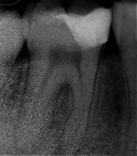
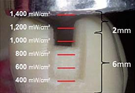
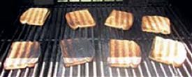
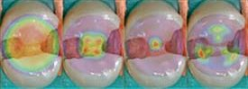
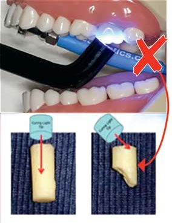
Переклад Юлії і Анни Бодаква. Далі буде…